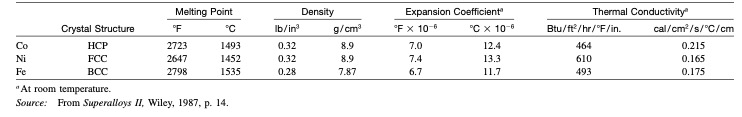
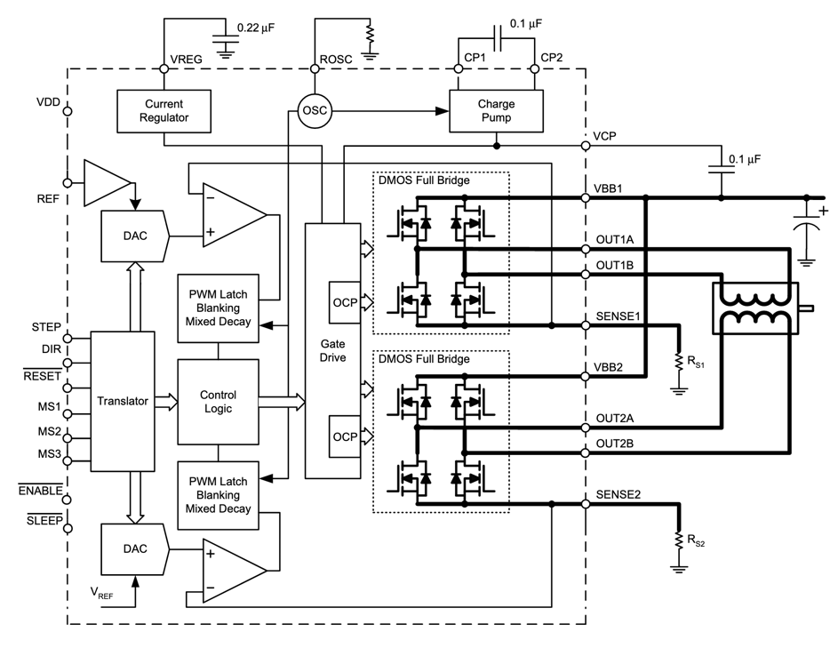

This section will give an overview of the structural model, while details are given in the specific mechanical (also called architectural, Section 5.1), electrical (Section 5.4) and software (Section 5.3) architectures sections. Note that sometimes, these different models are presented together in a single graphics.
The Structural model explains the physical structure of the product and its components, it is:
A description of the components (the combination of parts) of a product and their relationships.
An opportunity to specify the geometric elements, dimensions, topology, and other physical properties of the product.
The potential solutions (concepts), which are the result of the conceptual design phase.
The set of mechanics theories that obey physical laws required to study and predict the behavior of structures.
Why should you define structural model?
A structural model helps to describe the geometric elements (design feature, dimensions, constraints, etc.), topology (assembly constraint between components, tolerances, components mating conditions, etc.), and characteristics of the product.
A structural model helps to decide the physical form of the product and its components to ensure that the structure is fit for its intended purpose.
Structural model provides users with a physical model of the product, components, and characteristics of the material at the design phase that enable the stakeholder to understand the geometry, material reaction to external factors, etc.
The structural model ensures that the structures are safe and fulfill the functions for which they were built.
How should you define structural model?
The first level of definition is often to show how things are related together in a tree or graph, using “modeling language” such as “SysML (Block Definition, Activity, or Internal Block diagram)” or “UML”.
Model design should be provided in a format that can be used to manufacture each piece (usually STL file for 3D and SVG file for 2D design).
Modelling a design in an editable file format
An editable file format is a standard way that information is encoded for storage and allows the makers to study, modify the geometry of a model and reuse it.
To reuse a design model, it should provide information consist of:
The material characteristics of mechanical parts consist of:
1- Identifying the kind of characteristics and their properties:
- Mechanical characteristics like hardness, elasticity, plasticity, toughness, etc.
- Manufacturing properties like castability, machinability rating, etc.
- Thermal characteristics like melting point, thermal conductivity, etc.
- Electrical characteristics like electrical resistivity and conductibility, etc.
- Chemical properties like corrosion resistance, surface tension, etc.
Click to see the examples!
Example of material characteristics:
Figure below shows some physical properties of superalloy base elements.

Image of material characteristics
Source: Kutz, M. ed., 2002. Handbook of materials selection. John Wiley & Sons.
The architectural structure is a physical or logical layout of the components of a system design and their internal and external connections.
What minimum documentation should the architectural structure provide?
A model specifying the kind of components and their sub-components in the format of a tree or a graph including
DC motor
A/D converter
DC converters
Rotor
Sensor system
Motherboard
kit
Resistor
Transistors
IC
Sensors
Etc.
See @sec-structural-model for information about how to document this. Provide both an image and the editable files, as well as instruction how to use them.
example

Image of Structural graph of Open-Source-Ventilator
Details and editable format: PCB design
To reuse a electrical design, it should provide information consist of: